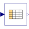
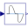

CombiTable1DsTable look-up in one dimension (matrix/file) with one input and n outputs |

|
Information
This information is part of the Modelica Standard Library maintained by the Modelica Association.
Univariate constant, linear or cubic Hermite spline interpolation in one dimension of a table. Via parameter columns it can be defined how many columns of the table are interpolated. If, e.g., columns={2,4}, it is assumed that 2 output signals are present and that the first output interpolates via column 2 and the second output interpolates via column 4 of the table matrix.
The grid points and function values are stored in a matrix "table[i,j]", where the first column "table[:,1]" contains the grid points and the other columns contain the data to be interpolated. Example:
table = [0, 0;
1, 1;
2, 4;
4, 16]
If, e.g., the input u = 1.0, the output y = 1.0,
e.g., the input u = 1.5, the output y = 2.5,
e.g., the input u = 2.0, the output y = 4.0,
e.g., the input u =-1.0, the output y = -1.0 (i.e., extrapolation).
- The interpolation interval is found by a binary search where the interval used in the last call is used as start interval.
- Via parameter smoothness it is defined how the data is interpolated:
smoothness = 1: Linear interpolation = 2: Akima interpolation: Smooth interpolation by cubic Hermite splines such that der(y) is continuous, also if extrapolated. = 3: Constant segments = 4: Fritsch-Butland interpolation: Smooth interpolation by cubic Hermite splines such that y preserves the monotonicity and der(y) is continuous, also if extrapolated. = 5: Steffen interpolation: Smooth interpolation by cubic Hermite splines such that y preserves the monotonicity and der(y) is continuous, also if extrapolated. = 6: Modified Akima interpolation: Smooth interpolation by cubic Hermite splines such that der(y) is continuous, also if extrapolated. Additionally, overshoots and edge cases of the original Akima interpolation method are avoided. - First and second derivatives are provided, with exception of the following two smoothness options.
- No derivatives are provided for interpolation by constant segments.
- No second derivative is provided for linear interpolation.
- Values outside of the table range, are computed by
extrapolation according to the setting of parameter extrapolation:
extrapolation = 1: Hold the first or last value of the table, if outside of the table scope. = 2: Extrapolate by using the derivative at the first/last table points if outside of the table scope. (If smoothness is LinearSegments or ConstantSegments this means to extrapolate linearly through the first/last two table points.). = 3: Periodically repeat the table data (periodical function). = 4: No extrapolation, i.e. extrapolation triggers an error - If the table has only one row, the table value is returned, independent of the value of the input signal.
- The grid values (first column) have to be strictly increasing.
The table matrix can be defined in the following ways:
- Explicitly supplied as parameter matrix "table",
and the other parameters have the following values:
tableName is "NoName" or has only blanks, fileName is "NoName" or has only blanks.
- Read from a file "fileName" where the matrix is stored as
"tableName". Both text and MATLAB MAT-file format is possible.
(The text format is described below).
The MAT-file format comes in four different versions: v4, v6, v7 and v7.3.
The library supports at least v4, v6 and v7 whereas v7.3 is optional.
It is most convenient to generate the MAT-file from FreeMat or MATLAB®
by command
or Scilab by commandsave tables.mat tab1 tab2 tab3
when the three tables tab1, tab2, tab3 should be used from the model.savematfile tables.mat tab1 tab2 tab3
Note, a fileName can be defined as URI by using the helper function loadResource. - Statically stored in function "usertab" in file "usertab.c". The matrix is identified by "tableName". Parameter fileName = "NoName" or has only blanks. Row-wise storage is always to be preferred as otherwise the table is reallocated and transposed. See the Tables package documentation for more details.
When the constant "NO_FILE_SYSTEM" is defined, all file I/O related parts of the source code are removed by the C-preprocessor, such that no access to files takes place.
If tables are read from a text file, the file needs to have the following structure ("-----" is not part of the file content):
----------------------------------------------------- #1 double tab1(5,2) # comment line 0 0 1 1 2 4 3 9 4 16 double tab2(5,2) # another comment line 0 0 2 2 4 8 6 18 8 32 -----------------------------------------------------
Note, that the first two characters in the file need to be "#1" (a line comment defining the version number of the file format). Afterwards, the corresponding matrix has to be declared with type (= "double" or "float"), name and actual dimensions. Finally, in successive rows of the file, the elements of the matrix have to be given. The elements have to be provided as a sequence of numbers in row-wise order (therefore a matrix row can span several lines in the file and need not start at the beginning of a line). Numbers have to be given according to C syntax (such as 2.3, -2, +2.e4). Number separators are spaces, tab (\t), comma (,), or semicolon (;). Several matrices may be defined one after another. Line comments start with the hash symbol (#) and can appear everywhere. Text files should either be ASCII or UTF-8 encoded, where UTF-8 encoded strings are only allowed in line comments and an optional UTF-8 BOM at the start of the text file is ignored. Other characters, like trailing non comments, are not allowed in the file.
MATLAB is a registered trademark of The MathWorks, Inc.
Parameters (12)
| nout |
Value: size(columns, 1) Type: Integer Description: Number of outputs |
|---|---|
| tableOnFile |
Value: false Type: Boolean Description: = true, if table is defined on file or in function usertab |
| table |
Value: fill(0.0, 0, 2) Type: Real[:,:] Description: Table matrix (grid = first column; e.g., table=[0, 0; 1, 1; 2, 4]) |
| tableName |
Value: "NoName" Type: String Description: Table name on file or in function usertab (see docu) |
| fileName |
Value: "NoName" Type: String Description: File where matrix is stored |
| verboseRead |
Value: true Type: Boolean Description: = true, if info message that file is loading is to be printed |
| columns |
Value: 2:size(table, 2) Type: Integer[:] Description: Columns of table to be interpolated |
| smoothness |
Value: Modelica.Blocks.Types.Smoothness.LinearSegments Type: Smoothness Description: Smoothness of table interpolation |
| extrapolation |
Value: Modelica.Blocks.Types.Extrapolation.LastTwoPoints Type: Extrapolation Description: Extrapolation of data outside the definition range |
| verboseExtrapolation |
Value: false Type: Boolean Description: = true, if warning messages are to be printed if table input is outside the definition range |
| u_min |
Value: Internal.getTable1DAbscissaUmin(tableID) Type: Real Description: Minimum abscissa value defined in table |
| u_max |
Value: Internal.getTable1DAbscissaUmax(tableID) Type: Real Description: Maximum abscissa value defined in table |
Connectors (2)
| u |
Type: RealInput Description: Connector of Real input signal |
|
|---|---|---|
| y |
Type: RealOutput[nout] Description: Connector of Real output signals |
Components (1)
| tableID |
Type: ExternalCombiTable1D Description: External table object |
|---|
Used in Examples (6)
|
Modelica.Electrical.Machines.Examples.InductionMachines Test example: InductionMachineSquirrelCage with losses |
|
|
Modelica.Magnetic.FluxTubes.Examples.MovingCoilActuator Comparison of the force-current characteristics of both converter models with armature blocked at mid-position |
|
|
Modelica.Magnetic.FluxTubes.Examples.MovingCoilActuator Force-stroke characteristic of the permeance model at constant current |
|
|
Modelica.Magnetic.FluxTubes.Examples.SolenoidActuator Slow forced armature motion of both solenoid models so that electromagnetic field and current are quasi-static |
|
|
Modelica.Magnetic.FundamentalWave.Examples.BasicMachines.InductionMachines Induction machine with squirrel cage and losses |
|
|
Modelica.Magnetic.QuasiStatic.FundamentalWave.Examples.BasicMachines.InductionMachines Induction machine with squirrel cage and losses |
Used in Components (2)
|
Modelica.Electrical.Batteries.BaseClasses Battery with open-circuit voltage dependent on state of charge, self-discharge and inner resistance |
|
|  |
Modelica.Electrical.PowerConverters.ACAC.Control Reference voltage to firing angle converter |